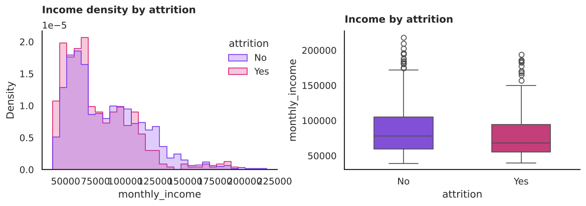
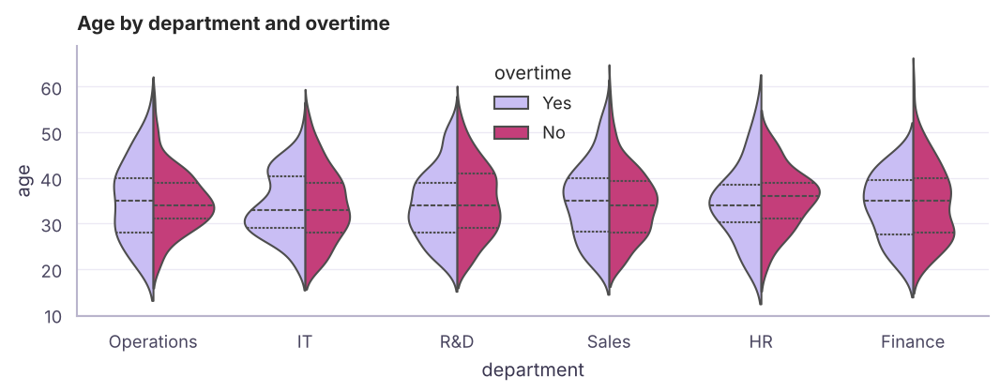
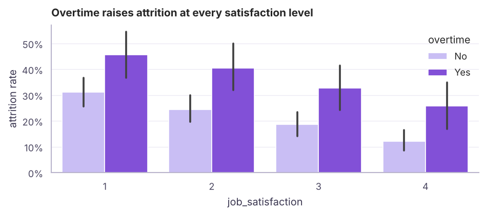
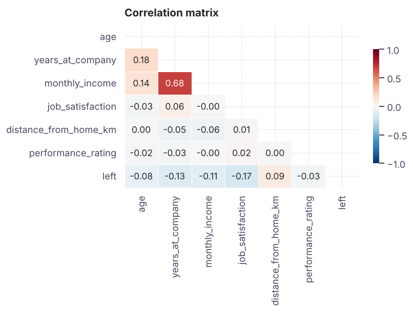
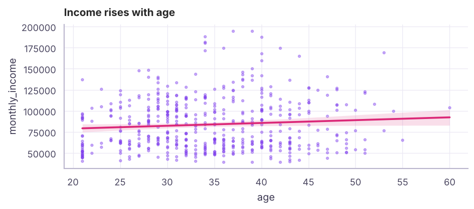
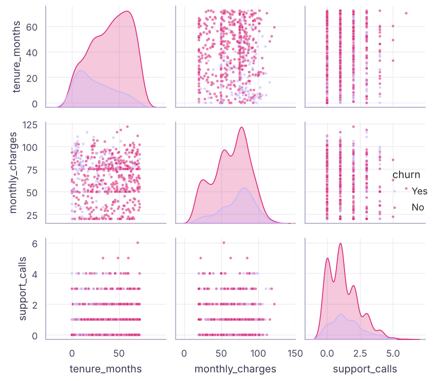
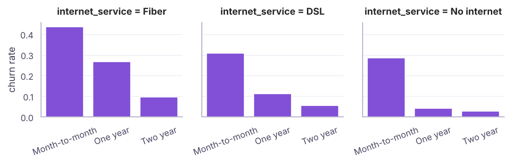
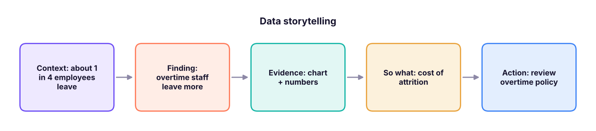

Data Visualisation II: Seaborn Statistical Charts and Interactive Plotly
Make statistical charts quickly with Seaborn (distributions, categorical comparisons, relationships, correlation heatmaps, pair plots and facets) using the HR attrition data, and build interactive charts and simple dashboards with Plotly Express and Streamlit.
- Use Seaborn's figure-level and axes-level functions with hue, col and row
- Compare distributions across groups with histplot, kdeplot, boxplot, violinplot and countplot
- Show relationships with scatterplot, regplot, heatmaps of correlations and pairplot
- Build interactive charts with Plotly Express and know when to use Streamlit
- Turn charts into a clear data story
Seaborn in one idea
Seaborn works directly with long DataFrames: you name the columns for x, y, hue (colour), col/row (small multiples), and it groups, aggregates and adds legends for you.
import pandas as pd, numpy as np, seaborn as sns, matplotlib.pyplot as plt
hr = pd.read_csv("hr_employees.csv")
hr["left"] = (hr["attrition"] == "Yes").astype(int)
print(hr.shape, f"attrition rate {hr.left.mean():.1%}", sns.__version__)
print(hr.groupby("overtime")["left"].mean().round(3).to_dict(), hr.groupby("department")["left"].mean().round(3).sort_values().to_dict())(1500, 16) attrition rate 25.9% 0.13.2
{'No': 0.216, 'Yes': 0.367} {'Operations': 0.219, 'Finance': 0.227, 'HR': 0.229, 'IT': 0.243, 'R&D': 0.26, 'Sales': 0.304}| Question | Seaborn function |
|---|---|
| Distribution of one variable | histplot, kdeplot, ecdfplot |
| Distribution by group | boxplot, violinplot, stripplot, boxenplot |
| Counts of categories | countplot |
| Average per category (with CI) | barplot, pointplot |
| Two numeric variables | scatterplot, regplot, lmplot, jointplot |
| Many variables | pairplot, heatmap of df.corr() |
| Small multiples | displot, catplot, relplot with col=/row= |
Distributions

common_norm=False scales each group separately, so a small group (leavers) is not dwarfed by a big one.

Categorical comparisons

print((hr.pivot_table(index="job_satisfaction", columns="overtime", values="left", aggfunc="mean") * 100).round(1))overtime No Yes job_satisfaction 1 31.1 45.5 2 24.4 40.5 3 18.7 32.8 4 12.0 25.8
Relationships and correlation

print(corr["left"].drop("left").sort_values())job_satisfaction -0.17 years_at_company -0.13 monthly_income -0.11 age -0.08 performance_rating -0.03 distance_from_home_km 0.09 Name: left, dtype: float64
Correlation measures linear association between −1 and +1. It does not prove causation, and it can miss non-linear patterns: always look at the scatter too.

Pair plots and facets


print((tc.pivot_table(index="contract", columns="internet_service", values="churned", aggfunc="mean") * 100).round(1))internet_service DSL Fiber No internet contract Month-to-month 30.8 43.5 28.5 One year 11.1 26.7 4.1 Two year 5.6 9.5 2.8
Interactive charts with Plotly Express
Plotly makes charts you can hover, zoom and filter in a browser or notebook. The syntax mirrors Seaborn:
import plotly.express as px
fig = px.scatter(tc, x="tenure_months", y="monthly_charges", color="churn",
hover_data=["contract", "payment_method"], opacity=.6,
title="Churn by tenure and charges")
fig.show() # interactive in notebooks
fig.write_html("churn.html") # share as a standalone web page
px.line(monthly_df, x="month", y="sales", color="category")
px.bar(region_df, x="region", y="sales", text_auto=".2s")
px.histogram(hr, x="monthly_income", color="attrition", barmode="overlay")
px.choropleth(...) # mapsA mini dashboard app with Streamlit
# app.py -> run with: streamlit run app.py
import streamlit as st, pandas as pd, plotly.express as px
df = pd.read_csv("telecom_churn.csv")
contract = st.sidebar.multiselect("Contract", df.contract.unique(), default=list(df.contract.unique()))
d = df[df.contract.isin(contract)]
st.title("Churn dashboard")
st.metric("Churn rate", f"{(d.churn == 'Yes').mean():.1%}")
st.plotly_chart(px.histogram(d, x="tenure_months", color="churn", barmode="overlay"))Streamlit turns a Python script into a web app with filters, which is useful for sharing analyses and ML demos (see the GenAI track for chat apps).
From charts to a data story

- One message per chart, written as the title.
- Show the comparison that proves it (overtime vs not), not every chart you made.
- Quantify impact (people, ₹, %).
- End with a recommendation and its owner.
Summary
- Seaborn plots long DataFrames by column name with
hue,colandrow; it sits on Matplotlib, so you can still style the axes. - Distributions:
histplot(withcommon_norm=False),kdeplot,boxplot,violinplot; categories:countplot,barplotwith confidence intervals. - Relationships:
scatterplot,regplot,pairplot, correlationheatmap(correlation ≠ causation). - Facets (
catplot,relplot,displot) create small multiples. - Plotly Express gives interactive charts; Streamlit turns scripts into dashboards. Tell a story: one message per chart.
1. What does hue="attrition" do in Seaborn?
col= would create separate panels instead.2. Which chart shows the mean per category with a confidence interval?
countplot shows counts.3. A correlation of −0.8 means…
4. Which function creates small multiples of bar charts?
col and row.5. What is the main advantage of Plotly over Matplotlib?
write_html.6. Why use common_norm=False in a histplot with hue?
(1) Histogram of monthly_charges by churn. (2) Box plot of tenure_months by contract. (3) Churn rate by payment method, sorted. (4) Correlation heatmap of numeric columns plus churned. (5) Write three insight titles from what you see.
Show solution
sns.histplot(tc, x="monthly_charges", hue="churn", common_norm=False, stat="density")
sns.boxplot(tc, x="contract", y="tenure_months")
order = tc.groupby("payment_method")["churned"].mean().sort_values(ascending=False).index
sns.barplot(tc, x="payment_method", y="churned", order=order, errorbar=None)
sns.heatmap(tc.select_dtypes("number").corr(), annot=True, fmt=".2f", cmap="RdBu_r", center=0)
# e.g. "Month-to-month customers churn far more", "Churners have short tenure", "Churn rises with support calls"Q: How would you visualise the relationship between a categorical and a numeric variable? Box or violin plots per category (distribution), or bar/point plots of the mean with confidence intervals.
Q: How do you show correlations among many numeric variables? A correlation heatmap (masked upper triangle) followed by scatter plots for the interesting pairs; a pair plot for a handful of variables.
Q: How do you present findings to non-technical stakeholders? Lead with the recommendation, show one clear chart per point with an insight title, quantify impact, and keep methods in an appendix.
Practise more online
Free, trusted places to test yourself on this topic. Links open the original site in a new tab.